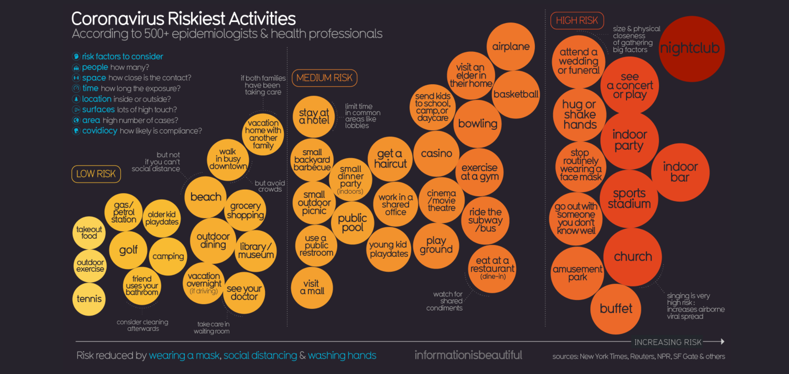

The data visualization that I have chosen to analyse is the infographic showing “Coronavirus Riskiest Activities”:

I will be analysing this data visualization in terms of the communication and representational strategies that the designer used. First, I shall look at the representational strategies. According to Kidd, representational texts such as images (icons in this case) do not just capture reality. They should help shape it within the given frame. He also mentions that representational texts/images can be manipulative depending on which ones you decide to use (Kidd, 2015). Looking at the icons in the infographic (the coloured circles wherein the activities are written) we can see that they are pretty simple. They have various sizes and colours. The colours are all warm colours which make the entire infographic feel uniform and complete. It is clear that the redder colours, the riskier the activity this is further supported by the fact that the riskier activities are represented in bigger circles along with heavier text. These representational choices are effective seeing that the icons that represent the data are styled in such a way that it is clear what risk level the different icons are representing. Overall, the representational strategies resulted in clear and effective representation of the data, I think that the representational choices effectively shared the desired information.
Now I shall look at the communication strategies. I appreciate the use of text, there is very little text in the infographic and is spread out between activity names within the coloured icons, risk factors to consider, and extra information or guidelines that accompany some of the activity bubbles. The communication choices resulted in a clear and easy to digest infographic which is perfectly suited to the topic seeing that people need to keep these risky activities as well as the accompanying guidelines, this means that this information needs to be clear and easy to read.
Ultimately, I believe the representational and communication strategies in the infographic are well planned out and executed seeing that it is a simple, straight forward, appealing to look at, and the information is easy to digest. I believe that this is an example of well planned out and executed data visualization that is sharing important information.